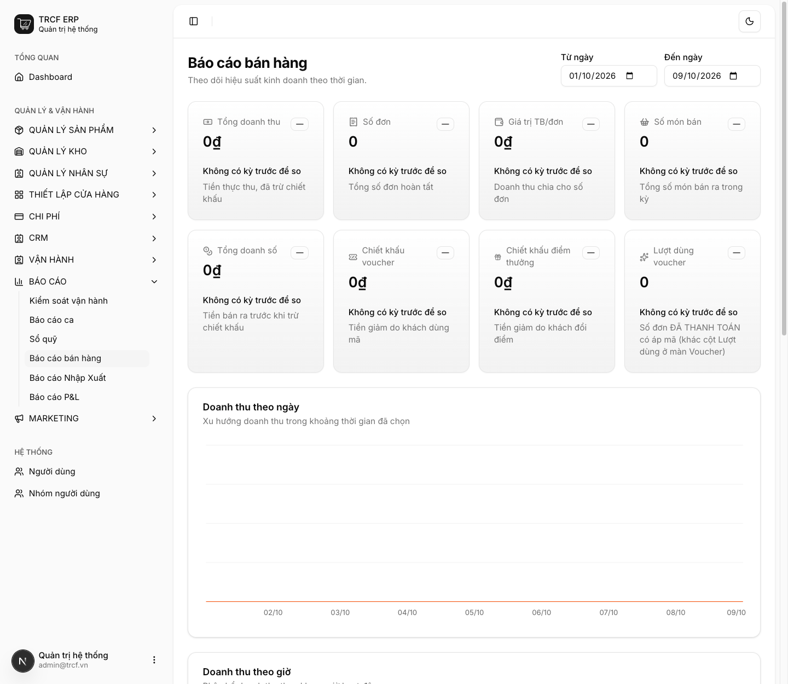
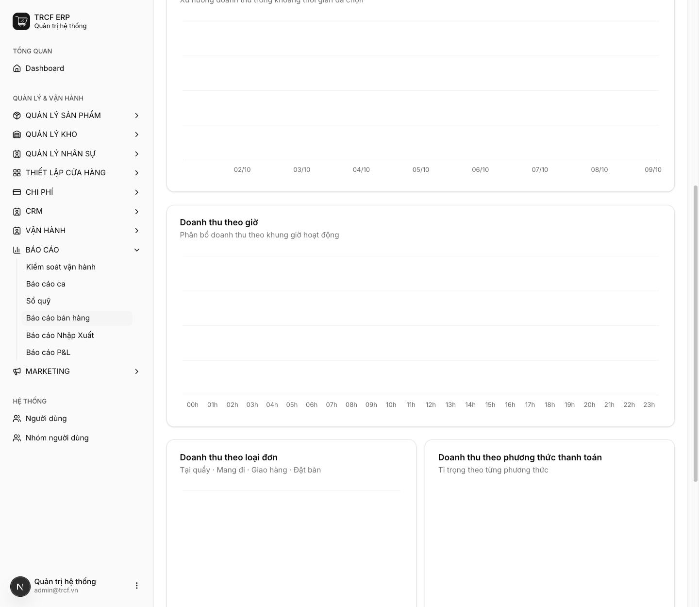

Chương 8 · Báo cáo kinh doanh
8.1 Đọc hiểu báo cáo bán hàng
1. Đường dẫn vào chức năng
Menu trái: Báo cáo → Báo cáo bán hàng (địa chỉ /sales-report).
- Dành cho: quản lý và chủ quán.
2. Ví dụ nền và các bước thực hiện
Ví dụ: quản lý xem hiệu suất bán hàng 8 ngày gần nhất (02/10 – 09/10).
- Chọn khoảng ngày bằng Từ ngày, Đến ngày ở đầu trang.
- Đọc các ô tổng, rồi đọc biểu đồ và bảng xếp hạng.
Bước 1Chọn kỳ và đọc các ô tổng
- Vào Báo cáo → Báo cáo bán hàng.
- Chọn Từ ngày, Đến ngày.
- Đọc các ô: Tổng doanh thu, Số đơn, Giá trị TB/đơn, Số món bán.
- Đọc tiếp: Tổng doanh số, Chiết khấu voucher, Chiết khấu điểm thưởng, Lượt dùng voucher.
- Mỗi ô có dòng so với kỳ trước (nếu có).

Bước 2Đọc biểu đồ và bảng bên dưới
- Cuộn xuống: Doanh thu theo ngày, Doanh thu theo giờ.
- Doanh thu theo loại đơn, theo phương thức thanh toán.
- Top 10 sản phẩm bán chạy: hạng, sản phẩm, số lượng, doanh thu.

3. Giải thích các trường
Các ô tổng trên cùng
| Ô | Nghĩa | Dùng để |
|---|---|---|
| Tổng doanh thu | Tiền thực thu từ đơn đã thanh toán, đã trừ chiết khấu | Con số quen thuộc nhất, ít giá trị nhất khi đứng một mình |
| Số đơn | Số lượt khách trả tiền | So sánh giữa các ngày để biết ngày nào đông |
| Giá trị TB/đơn | Doanh thu ÷ số đơn | Con số đáng theo dõi nhất |
| Số món bán | Tổng số ly/món bán ra | Chia cho số đơn ra "mỗi khách gọi mấy món" |
| Tổng doanh số | Tiền bán ra trước khi trừ chiết khấu | Đối chiếu với doanh thu để thấy khuyến mãi tốn bao nhiêu |
| Chiết khấu voucher / điểm thưởng | Tiền giảm do khách dùng mã / đổi điểm | Đo hiệu quả và chi phí khuyến mãi |
| Lượt dùng voucher | Số đơn đã thanh toán có áp mã | Khác cột Lượt dùng ở màn Voucher |
Đọc Giá trị TB/đơn
| Dấu hiệu | Nghĩa | Việc cần làm |
|---|---|---|
| Số đơn tăng, TB/đơn không đổi | Đông khách hơn | Tăng năng lực phục vụ, chuẩn bị đủ hàng |
| Số đơn không đổi, TB/đơn tăng | Mỗi khách mua nhiều hơn | Kết quả của bán thêm, combo, topping |
Biểu đồ và bảng bên dưới
| Phần | Nhìn ra gì |
|---|---|
| Doanh thu theo ngày | Ngày nào trong tuần yếu: lên khuyến mãi |
| Doanh thu theo giờ | Dùng để xếp ca cho khớp giờ đông |
| Theo loại đơn / phương thức thanh toán | Tỷ trọng tại quầy, mang đi, giao hàng, tiền mặt, chuyển khoản |
| Top 10 sản phẩm bán chạy | Món nào kéo doanh thu |
Hai màn cho hai câu hỏi khác nhau
| Câu hỏi | Xem ở đâu |
|---|---|
| "Hôm nay quầy bán ra bao nhiêu?" | Báo cáo bán hàng |
| "Kỳ này quán thực lãi bao nhiêu?" | Báo cáo P&L (mục 8.2) |
4. Lưu ý quan trọng
⚠️
Chỉ tính đơn ĐÃ THANH TOÁN.
- Đơn treo trên bàn, đơn đã lưu chưa thu tiền: không nằm trong báo cáo.
- Thấy doanh thu thấp hơn cảm nhận: kiểm đơn chưa thu tiền trước khi nghi ngờ số liệu.
⚠️
Muốn doanh thu đã trừ hàng hoàn, đọc báo cáo P&L.
- Đó mới là con số dùng để tính lãi (mục 8.2).
💡
Đối chiếu doanh thu theo giờ với lịch ca (chương 7).
- Giờ cao điểm mà chỉ một người đứng quầy: đó là doanh thu đang bị bỏ lỡ, không phải "quán vắng".
💡
Hai con số lệch nhau nhiều là dấu hiệu cần xem lại chất lượng phục vụ hoặc quy trình lên đơn.
- Kiểm Vận hành → Hoàn đơn để biết hoàn vì lý do gì.